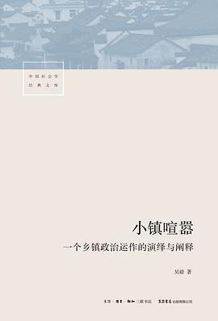

《小镇喧嚣：一个乡镇政治运作的演绎与阐释》

总体观点
《小镇喧嚣》是中国基层政治研究领域一座无法逾越的高峰。华中科技大学吴毅教授打破了传统社会科学将制度抽象化的宏大叙事，通过长达一年的深度田野追踪，将中部地区“小河镇”一年里发生的千头万绪、鸡飞狗跳的真实事件，以如同小说般引人入胜的纪实长卷完整重现。
全书以乡镇党委书记、镇长与基层干部为主视角，层层解剖了乡镇政权在“上级压力型体制”与“下级熟人社会钉子户”双重夹击下的真实生存困境。从招商引资政绩达标、征地拆迁群体博弈、农业税费取消前后的干部角色异化，到上访维稳与酒桌政治，作者深刻提炼出中国基层国家政权内卷化与“权力的非正式运作”逻辑，为读懂中国真实国情提供了最真实的解剖标本。
核心观点
-
1. 压力型体制下的乡镇政权：悬在半空的政治三明治
乡镇政府作为国家政权的神经末梢，既要面对上级县市部门“一票否决”的高压指标考核，又要面对熟人社会中法律意识觉醒的农民，处于两头受气、权责严重不对等的尴尬夹缝。
面对县里下达的“必须在一周内完成千亩工业园区征地”死命令，镇党委书记不得不带领全镇干部通宵下村做工作，甚至动用非正式资源化解矛盾。 -
2. “权力的非正式运作”：基层治理的技术灰度
在严格正式法律制度无法有效解决基层纷繁复杂的宗族人情纠纷时，基层干部不得不依赖吃请送礼、动用宗族长老说和、利益私下置换等非正式权术维持社会稳定。
面对坚决不肯搬迁的“老钉子户”，镇长通过找到其在县城当公务员的表侄进行体制施压，辅以私下多补两万元“青苗补偿款”最终平息风波。 -
3. 维稳政治的逻辑陷阱：小闹小解决，大闹大解决
以“不出事”为底线的信访维稳考核机制，往往诱发了部分底层农民通过进京上访、群体阻工等激进策略向政府索要超额利益的逆向博弈逻辑。
村民李某因多年前的一次微小纠纷抓住全国两会敏感时期赴京上访，镇政府为了防止“一票否决”连夜派车赴京接人并全额报销差旅补助平息事态。 -
4. 招商引资与政绩饥渴：虚火旺盛的发展锦标赛
在GDP锦标赛激励下，乡镇干部把绝大部分精力投入到招商引资的虚假造势中，低价批地、税收先征后返，甚至引入污染企业，积累了深远的生态与债务代价。
小河镇为了争夺一个外地服装加工厂投资项目，镇领导鞍前马后在酒桌上陪喝至胃出血，最终企业因市场波动仅经营半年便卷款弃厂。 -
5. 乡村熟人社会的原子化解体与治理内卷
随着青壮年农民成批外出务工，传统宗族礼俗约束迅速瓦解，留守老人的冷漠与功利主义抬头，使得基层干部动员群众参与公共事务的边际成本急剧飙升。
修建全村公共灌溉水渠，受益各家各户却为了占用自己家一分菜地争吵不休甚至大打出手，基层公共品供给陷入典型的集体行动困境。
全书结构
-
导论与第一篇：小河镇的风土人情与干部群像
交代中部某省小河镇的地理、经济与行政建制背景；描摹镇党委书记周书记、镇长李镇长等核心官员性格特征，确立全书微观政治观察视角。
生动展现每天早晨镇政府食堂里干部们围坐吃热干面时，在看似随意的玩笑唠嗑中部署全天征地截访任务的独特政治生态。 -
第二篇：征地拆迁风波（经济发展与农民维权的剧烈碰撞）
详述小河镇为建设省级开发区拓展区，围绕数百亩农田征收与农房拆迁展开的数月拉锯战；钉子户抵抗、夜间拔树、阻断公路群体事件全息实录。
全景还原村民手持农具阻挡推土机进场施工，副镇长带队现场喊话、在泥泞田埂上与宗族带头人激烈交涉六小时的惊险现场。 -
第三篇：信访与维稳的政治博弈（不出事逻辑）
追踪多起典型涉法涉诉老上访户的心理动力学；解析镇政府“包保责任制”、截访小分队运作，以及“花钱买平安”机制对基层法治的深刻侵蚀。
一位伤残退伍老兵每年国庆节前夕习惯性准备行李箱，镇领导提前三天登门送米面油送慰问金将其稳在村里的博弈日常。 -
第四篇：酒桌上的乡镇政治文化与人际网络
剖析中国乡镇基层不可或缺的“吃喝文化”与非正式交往：接待上级视察陪酒、协调村干部关系、拉拢本地能人老板的情感润滑剂机制。
描绘一场接待县交通局领导的饭局，酒杯换盏之间如何巧妙解决了一条村道改扩建工程两百万元专项资金缺口的戏剧化细节。 -
第五篇：阐释与结语——中国基层国家政权的运作逻辑
从社会科学理论高度提炼“迎检政治”、“内卷化”与“悬浮型政权”概念，深刻总结中国国家治理体系在现代化转型期的制度张力与未来前途。
吴毅精辟总结：小镇的喧嚣不是无意义的嘈杂，而是传统社会向现代社会艰难阵痛转型中，基层政权所发出的真实呼吸与搏击声。